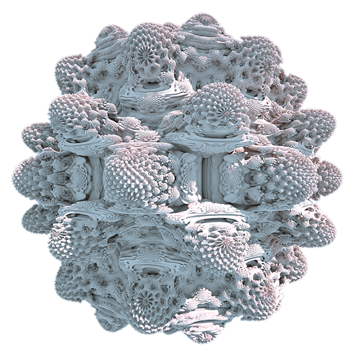

A blog about anything #
Hi there, and welcome to my blog! This is a place where I can express myself and I do so by writing about a variety of topics, but mostly about programming, mathematics, and fractals. I tend to forget a lot of the things that I learn, so by explaining what I have learned to myself, the knowledge persists a lot better.
2-dimensional fractals
The fascinating patterns and structures that emerge in iterated complex functions.
3-dimensional fractals
The endless complexity that can be found in fractals continuously intrigues me to find more about them.
Computer graphics
Creating your own world on a computer with the principles of light and mathematical equations.
Puzzle solutions
Write-ups about the solutions to puzzles, which is mostly about Project Euler.
Miscellaneous
List of topics that don't fit into a category by itself, because there are only a few posts about the topic.
